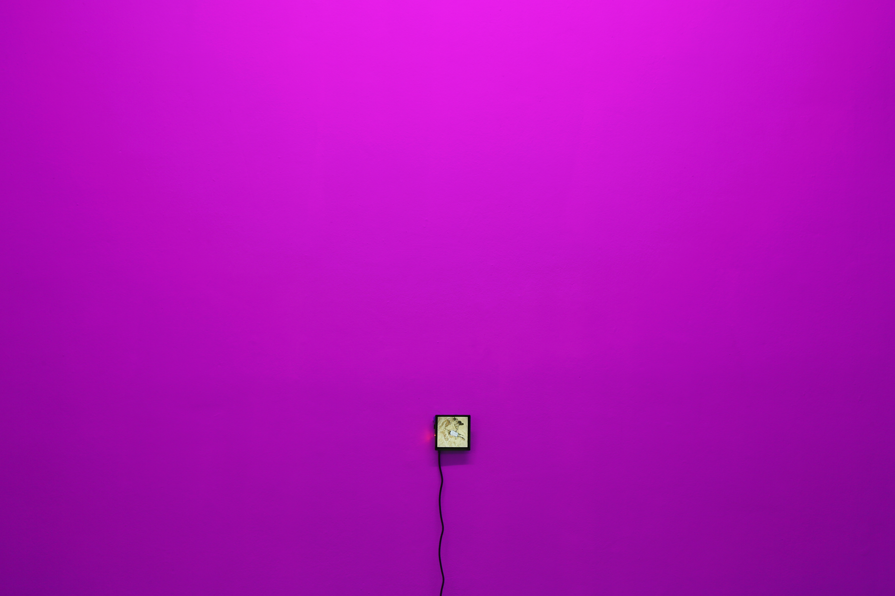
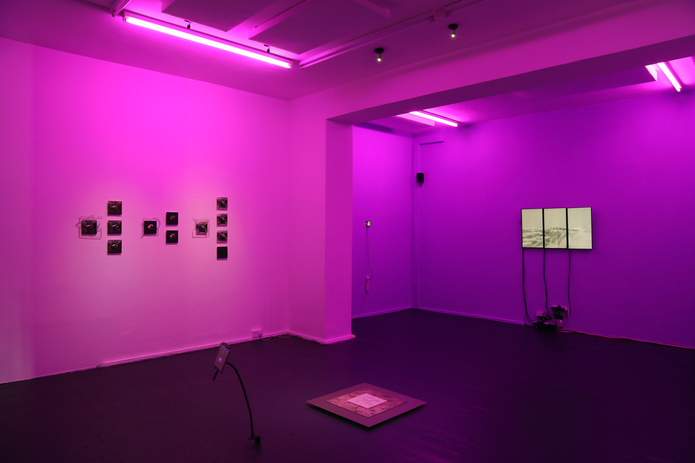

Creative R&D by Arjan Guerrero


New New New World (NNNW) is an artistic project of generative
speculation, a
transmedia ecosystem and a research by Arjan Guerrero from Media Forensis that investigates the practice of
worldbuilding and the new insights that the BigGAN, Large Language Models or AIs in general add to the
paradigm of images from a cognitive position that simultaneously intertwines
image-world-objects-environment-language.
Excerpt from the curatorial text by Karla Noguez for the exhibition New New New World (Somers Gallery, 2023) (Press kit)
Manifoldgazing
Manifoldgazing is a cosmic vision of constellations in formation. It presents a new world-of-objects taking shape: a sci-fi data visualisation of AI-generated objects being continuously re-classified by AI algorithms.

Installation view at Metamorphika gallery (London) within the exhibition Cosmic Ecologies curated by Ana Paola Flores
TequAItquAI Art
By Pita Arreola-Burns and Elliott Burns
In the beginning, Command-Z Undo. Command-Shift-Z Redo. Everything was in suspense,
all motionless and empty in the expanse of heaven. Not yet a man person, nor an animal, birds,
fish, crabs, trees, stones, caves, ravines, grasses or forests. Only the sky existed. The face of the earth
had not yet appeared. Command-A Select All. Command-X Cut. Raging ocean that covered everything was engulfed
in total darkness. “Let there be light” – and light appeared. He They separated the light from the
darkness, and he they named the light ‘Day’ and the darkness ‘Night’. Command-S Save. File-name = ‘New
Layer’...
Text commissioned for the exhibition New New New World (Somers Gallery,
2023)
New New New World is a project supported by the Arte, Ciencia y Tecnologías (ACT)
program (MX).